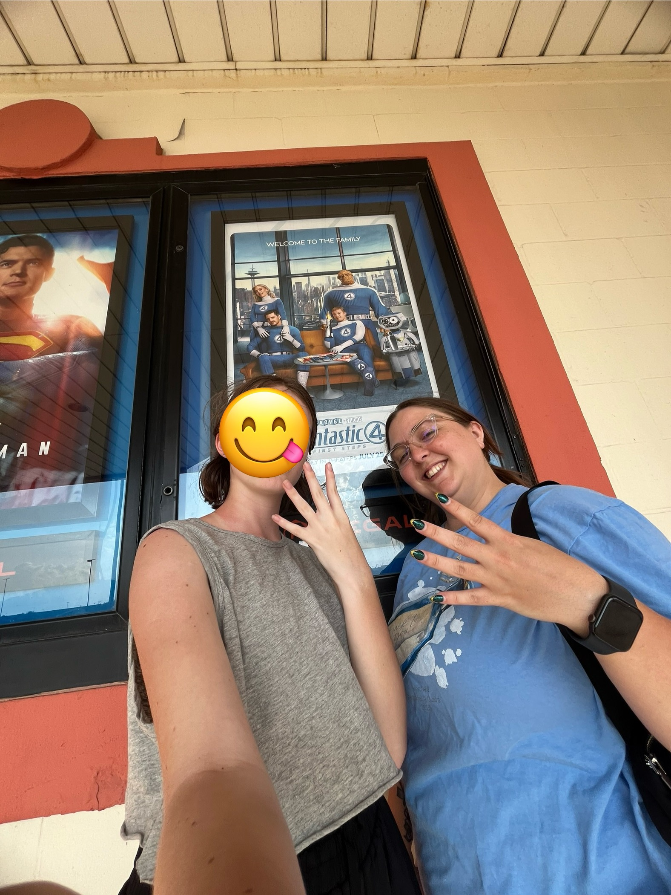
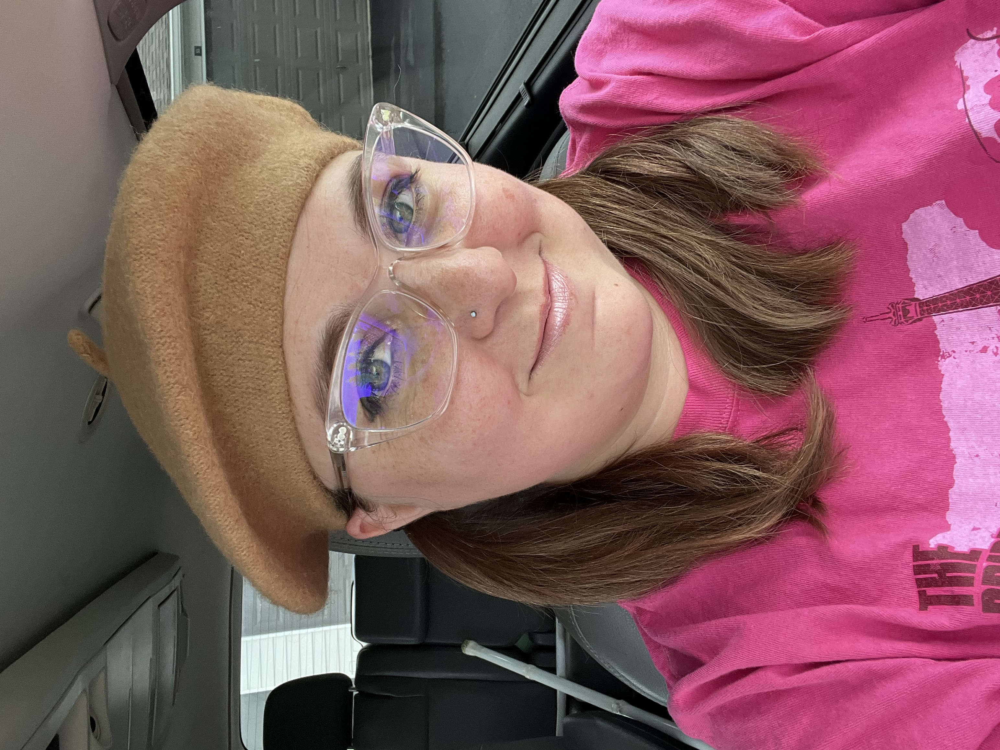
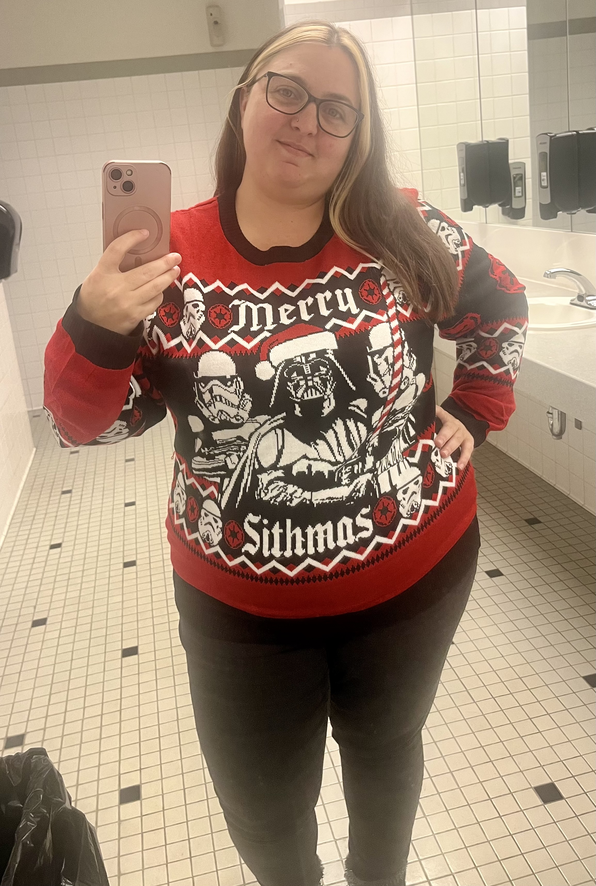
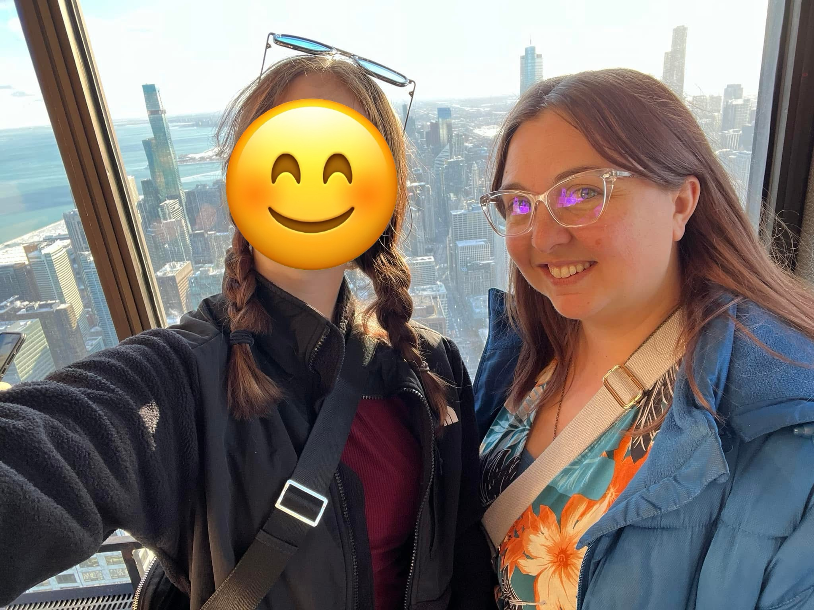
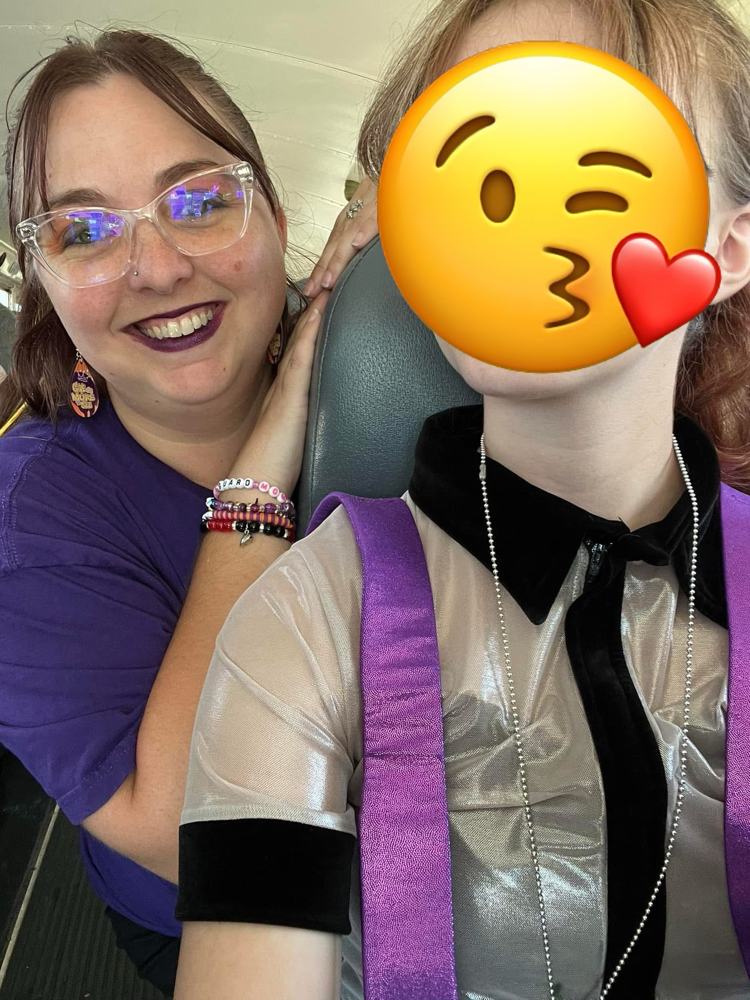
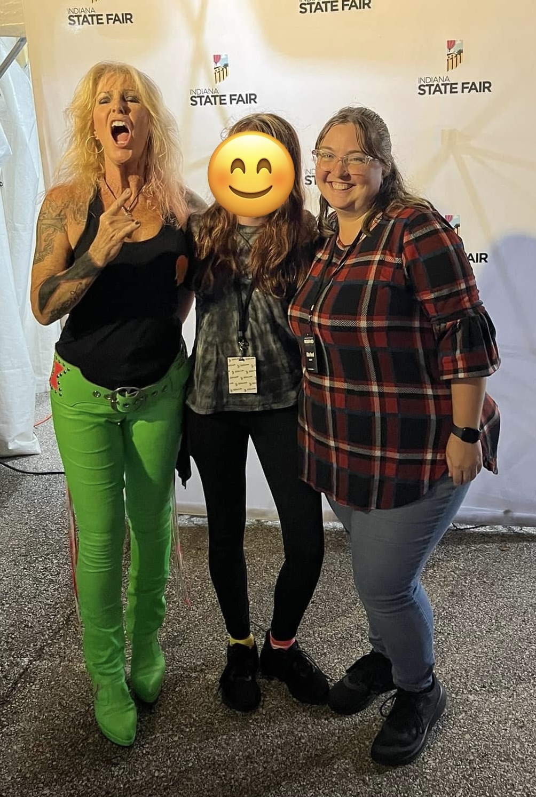
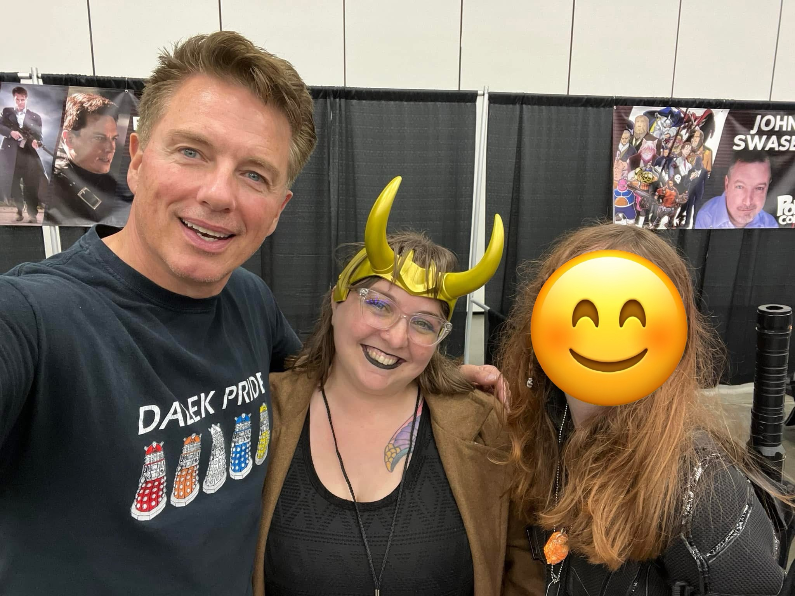
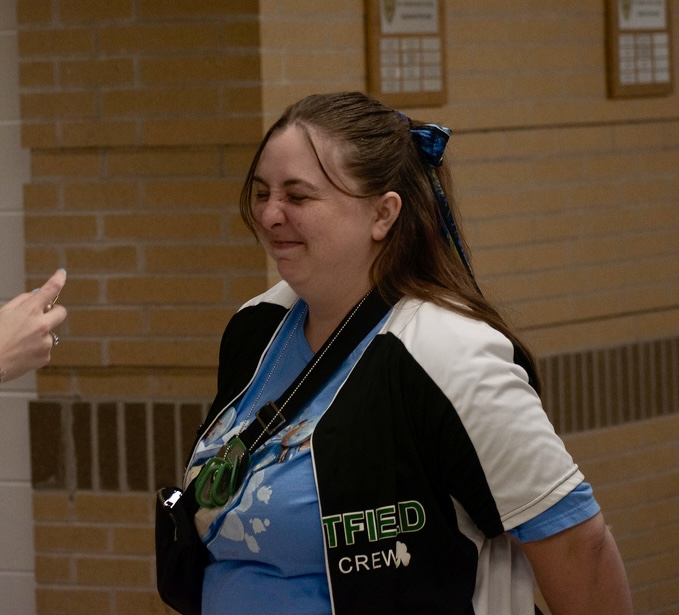
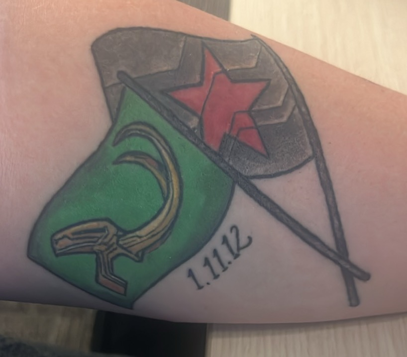
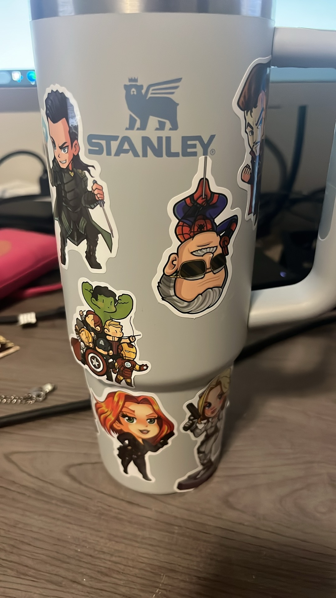

BRANCH ANALYSIS
MONITORING VARIANT ACTIVITY

Temporal Archive Entry
Variant Event Logged

Nexus Disturbance

Branch Deviation
Sacred Timeline Monitor
Multiversal Drift
Chrono Signal
Variant Identified
Timeline Interference

Sacred Continuity
Branch Stabilized
Temporal Echo

Variance Spike

Nexus Surge

Chrono Fragment
Multiverse Drift

Sacred Branch Archive

Variant Scan Complete
Timeline Mapping
Branch Echo

Continuity Analysis

Nexus Lock Confirmed